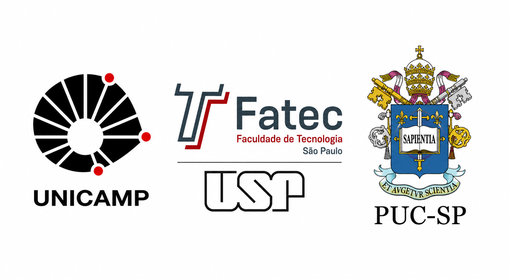

Faculdades que oferecem o curso
Existem diversas universidades e faculdades que oferecem cursos voltados para a área de desenvolvimento de software e tecnologia da informação. Esses cursos ensinam programação, banco de dados, redes de computadores, segurança digital e desenvolvimento de sistemas.
- USP - Universidade de São Paulo
- UNICAMP - Universidade Estadual de Campinas
- PUC Campinas
- FATEC - Faculdade de Tecnologia
- Senac
- Universidade Federal de São Carlos
Cursos relacionados
- Ciência da Computação
- Sistemas de Informação
- Análise e Desenvolvimento de Sistemas
- Engenharia de Software
- Tecnologia da Informação
A duração dos cursos pode variar entre dois e cinco anos, dependendo da graduação escolhida. Durante o curso, os estudantes aprendem conteúdos teóricos e práticos relacionados ao desenvolvimento de programas e sistemas computacionais.
Muitas instituições de ensino também oferecem laboratórios modernos e
equipados com computadores e tecnologias atualizadas, permitindo que
os alunos pratiquem os conhecimentos aprendidos em sala de aula.
Além disso, os cursos costumam incluir projetos práticos, desenvolvimento
de sistemas e atividades em grupo, ajudando os estudantes a adquirir
experiência e melhorar suas habilidades técnicas.
Outra vantagem é a oferta de oportunidades de estágio e parcerias com empresas da
área de tecnologia, o que facilita a entrada dos alunos no mercado de trabalho.
Dessa forma, os estudantes conseguem ganhar experiência profissional ainda durante
o curso, tornando-se mais preparados e qualificados para atuar na área de desenvolvimento de software.